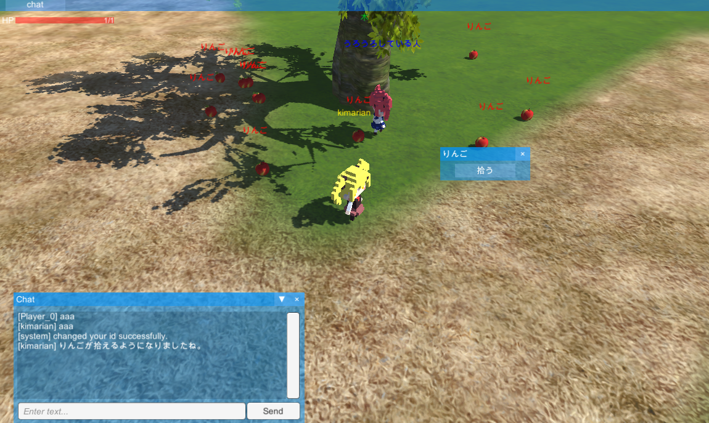

ネットゲームを開発しています。
開発中の画面
- マウスで地面をクリックするとその位置まで動きます
- チャットをすることができます。
- チャット欄で「/change_my_id <すきな文字列>」と入力すると、自分のIDを変えることができます。

Downloads
リンクをクリックすると.zipがダウンロードされます。
Release note
- 2018-12-24 0:03 破壊できる木箱を配置。複数回攻撃することで破壊可能。攻撃モーションの使用のため、試験的にプレイヤーオブジェクトを人に変更。
- 2018-12-19 19:23 木を配置。木の周辺に複数出現するりんごを配置。拾えるオブジェクト機能を追加。
- 2018-12-19 15:39 NPCにランダムウォーク機能を追加。チャットウィンドウにおけるマウススクロールの上移動が無効になるバグを確認。
- 2018-12-18 21:07 NPCとの会話機能を追加(NPCをクリック利用可能)。サーバーの動作が不安定なので落ちてたらリプを送ってください。
- 2018-12-18 1:15 空文字バグを修正。チャットUIを改善。
- 2018-12-16 19:30 /change_my_id等のコマンド機能を追加。チャット欄のユーザー名が空文字になるバグを確認。NPCを配置。
- 2018-12-16 16:08 チャット機能を追加。
- 2018-12-16 1:36 プレイヤーの頭上にIDを表示。Network HUDを非表示に変更。
WIP
発見済みのバグ
- 木箱のHPゲージに変化がないバグ
- 一度装飾タグのシンタックスを間違うと、チャット欄で正しく装飾タグが適応されなくなるバグ
Back to title.